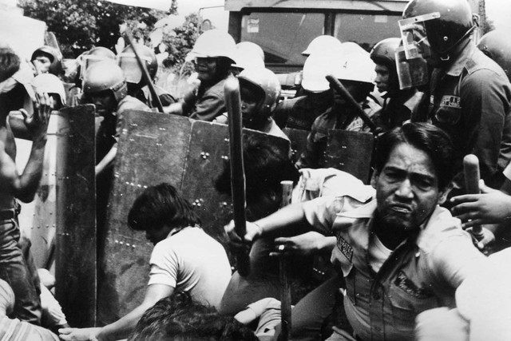

Police dispersal of workers protest during Martial Law.
The atrocious human rights violations conferred by the Marcos rule against the Filipino people are all around reported and documented and the poor economic performance of the Marcos dictatorship is recorded as well in researches. The proof of the loot committed by the dictator and his cronies is obviously uncovered in Supreme Court decisions like GR No. 152154 (July 15, 2003). An alleged 3,257 additional legal killings and about 35,000 casualties of torture is generally related to Ferdinand Marcos' 21-year dictatorship with a ravaging of Philippine resources and a serious human rights record. Documentations and records amid the marcos' rule are confirmed:
Human Rights Victims Reparation and Recognition Act
Scrolls at the archives of the Commission on Human Rights
Walls of Bantayog ng mga Bayani
In books—such as:
“Pumipiglas: Political Detention and Military Atrocities in the Philippines 1981-1982”
“Not On Our Watch: Martial Law Really Happened. We Were There”
“Mondo Marcos: Writings on Martial Law and the Marcos Babies”
“Dekada ’70”
“Subversive Lives: A Family Memoir of the Marcos Years”